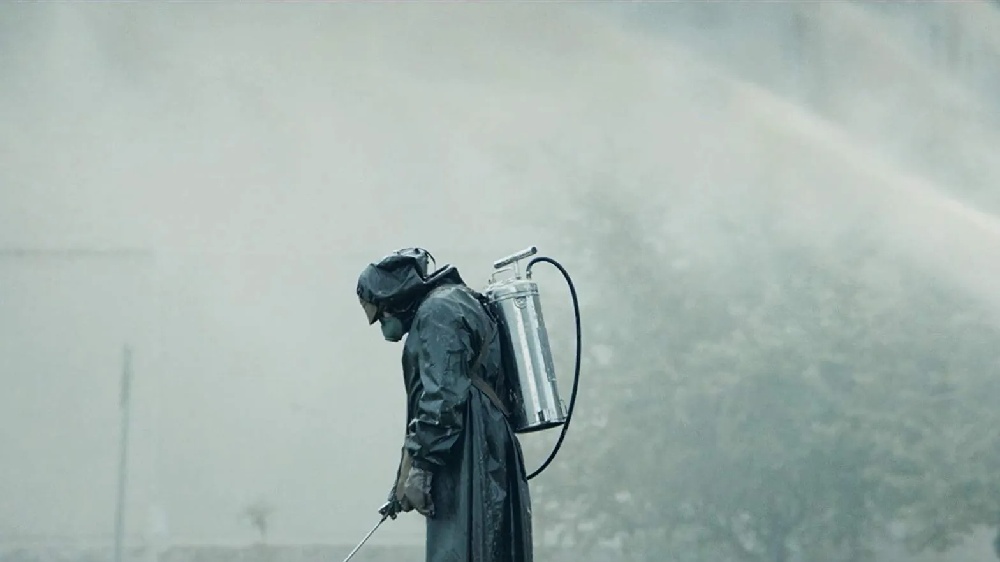

Series Netflix
Es una serie dobre la historia de un siglo después de que la Tierra fuera devastada por un holocausto nuclear, cien habitantes de una estación espacial vuelven al planeta para determinar si es habitable

Después de la extraña desaparición de un niño, un pueblo se encuentra ante un misterio que revela experimentos secretos, fuerzas sobrenaturales y a una niña muy especial.

Con flashes del pasado y del presente, una familia rota enfrenta los tormentosos recuerdos de su viejo hogar y el terror que la hizo alejarse de allí.

Seis años después de que un virus transmitido por la lluvia asola Escandinavia, dos hermanos se unen a un grupo de sobrevivientes que buscan seguridad y respuestas.
Series HBO
Para Rue llegó el momento de afrontar las consecuencias de su adicción. ¿Podrá recuperar a Jules? Averigua esto y que más deparará a tu grupo de adolescentes favorito en la segunda temporada de Euphoria.

Sigue los eventos que rodearon al accidente nuclear de 1986. Los cinco episodios siguen a los valientes hombres y mujeres que hicieron sacrificios increíbles para salvar a Europa de un desastre inimaginable
Series Amazon Prime
Se centra en un joven cirujano con síndrome de Savant quien es reclutado en la unidad de cirugía pediátrica de un prestigioso hospital. La pregunta surgirá: ¿Realmente puede salvar vidas una persona que no tiene la capacidad de relacionarse con otras personas?
Varias chicas jóvenes quedan varadas en una isla desierta tras un accidente aéreo. Aparentemente, todo fue un accidente, pero las chicas finalmente se dan cuenta de que podría no haberlo sido en absoluto.
Series Disney+
Steven Grant parecía llevar una vida sin sobrealtos hasta que la realidad empezó a desmoronarse a sus pies, rodeado de pesadillas de otra vida; la del mercenario Marc Spector. Además de múltuples personalidades, ahora tiene enemigos brutales que lo persiguen, y un misterio mortal que resolver con los dioses del antiguo egipto
La historia de Wanda Maximoff y Visión, una pareja de superhéroes con una vida aparentemente ideal que empieza a sospechar de la realidad.
Series Star+
El hospital más antiguo de los EE. UU. recibe a un nuevo director: el inconformista Max Goodwin, un médico decidido a cambiar las cosas y salvar vidas.
Esta historia épica es una adaptación de las famosas novelas de fantasía romántica de Diana Gabaldon, que narran el drama de dos amantes de diferentes tiempos.